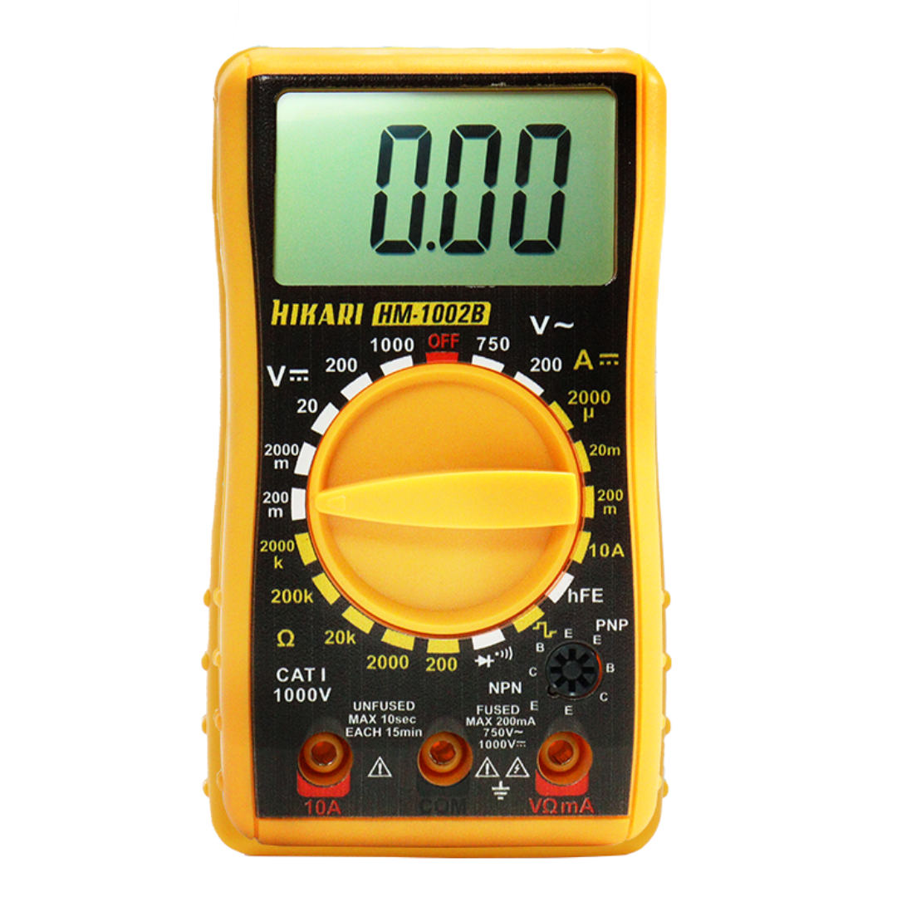

Multímetro Digital Hikari
Instrumento usado para medir tensão, corrente e resistência elétrica.
- Faixa de tensão: 0-600V
- Precisão: ±0,5%
- Display: LCD 3 dígitos e meio
| Grandeza |
Valor medido |
| Tensão |
12,4V |
| Corrente |
0,8A |

Manual do fabricante
Por Aluno: Matheus da Silva Rosa